tat·va — noun, Sanskrit. The essential nature of a thing; a true or first principle. At the studio, the tatva of a project is what remains once fashion is stripped away: site, climate, culture, and the people who will live in the space.
Designing with purpose, building with care.
At Tatva Studio, we believe that every space is a living dialogue between culture, climate, and community. Founded by Hema Perumalsamy, the studio is grounded in the idea that architecture must respond to its context — honoring tradition, embracing sustainability, and adapting with purpose.
From ecological materials to regionally rooted design principles, we craft spaces that are not only functional, but resonate with meaning, resilience, and belonging. With a shared commitment to contextual design and environmental responsibility, we bring together a diverse team of architects, designers, and strategists who believe that spaces should evolve from the land, culture, and communities they serve.
"Guided by curiosity and care, we collaborate closely with clients to craft bespoke solutions — infusing every project with sensitivity, innovation, and a deep respect for place." — Tatva Studio, design philosophy
Whether it's a humble dwelling or a large-scale intervention, our work seeks harmony between the built and the natural, the old and the emerging.
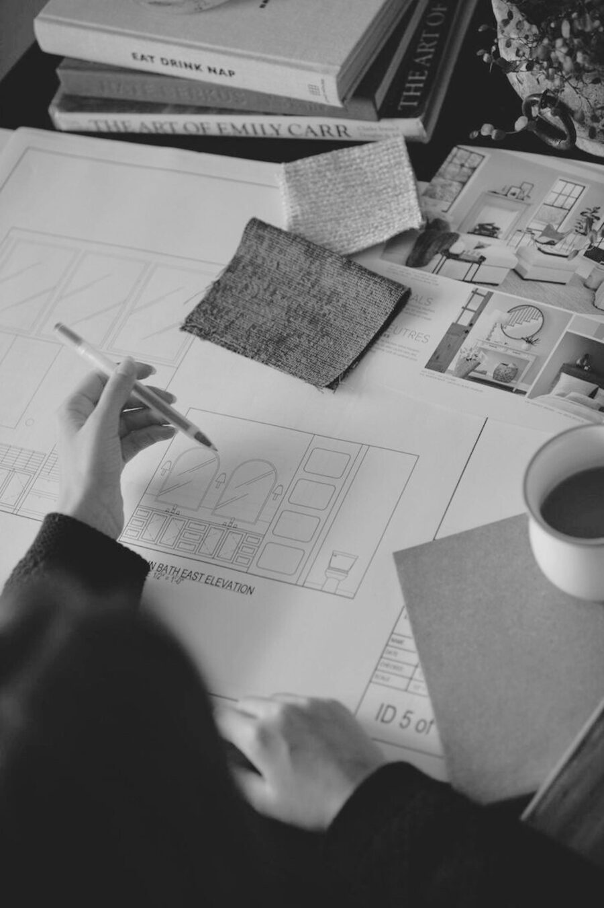
A story of curiosity & collaboration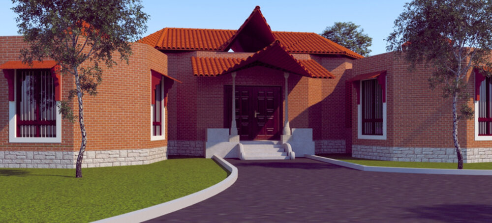
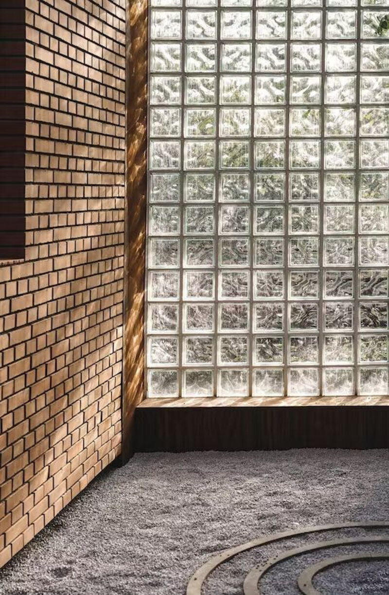
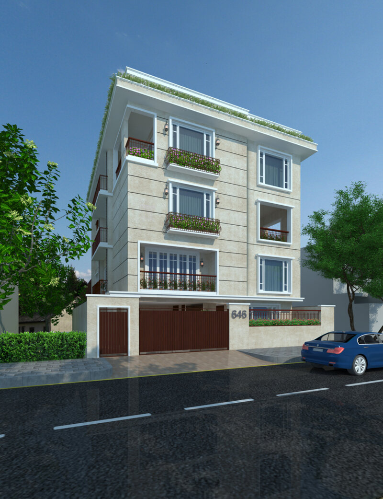
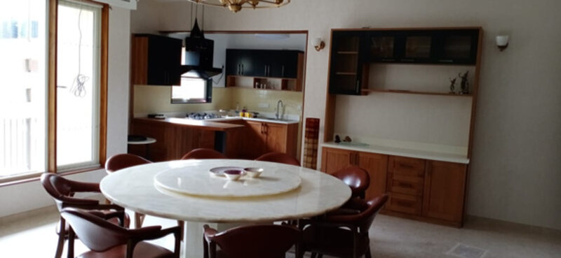
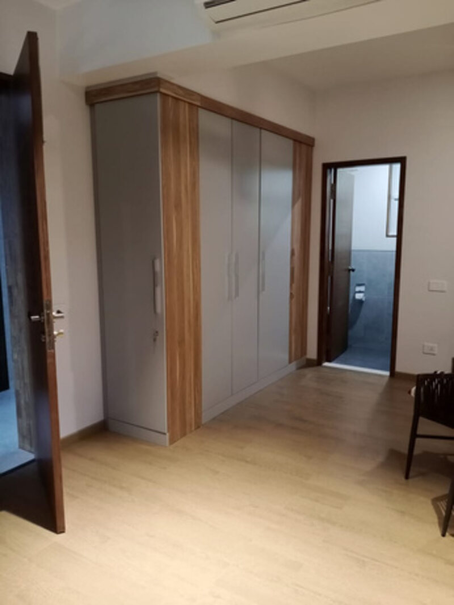
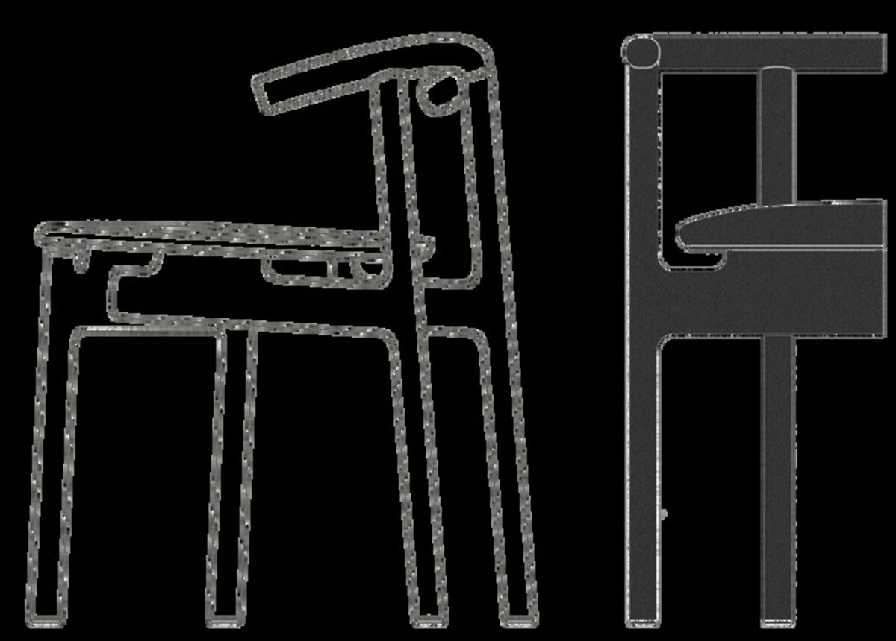
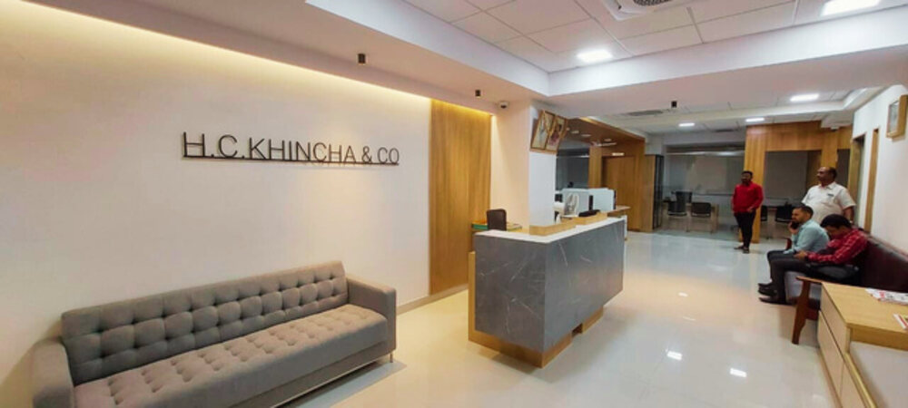
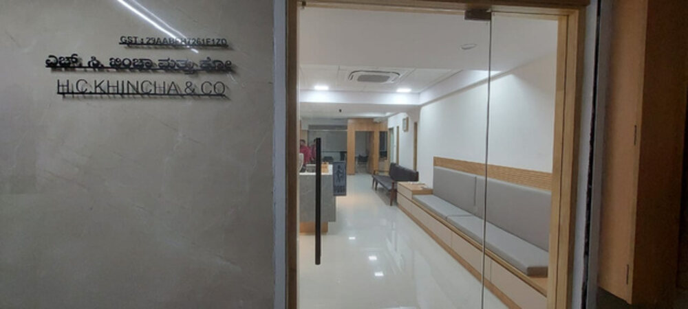
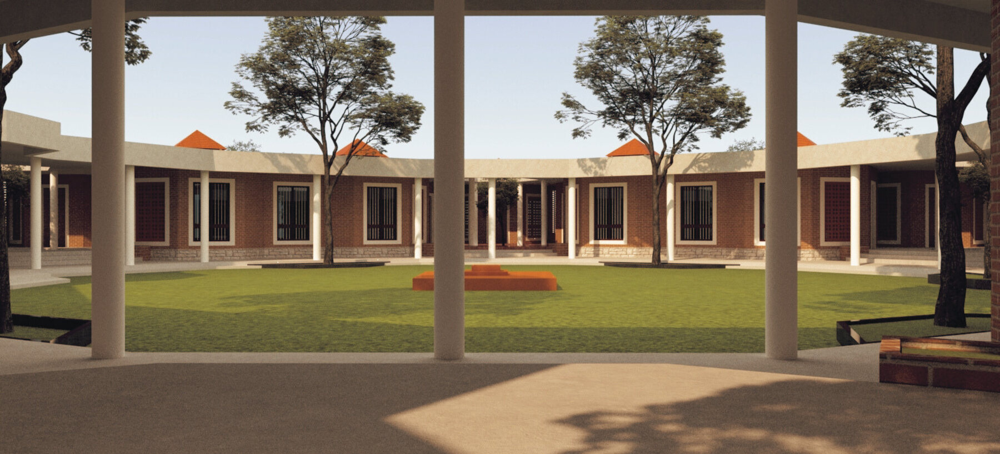
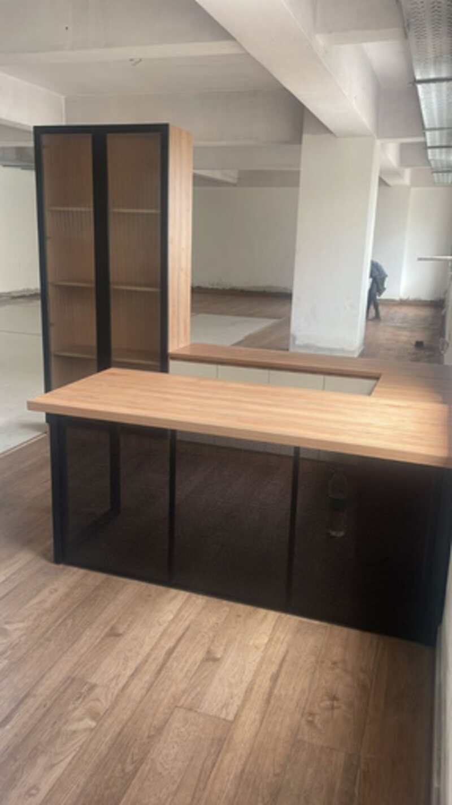
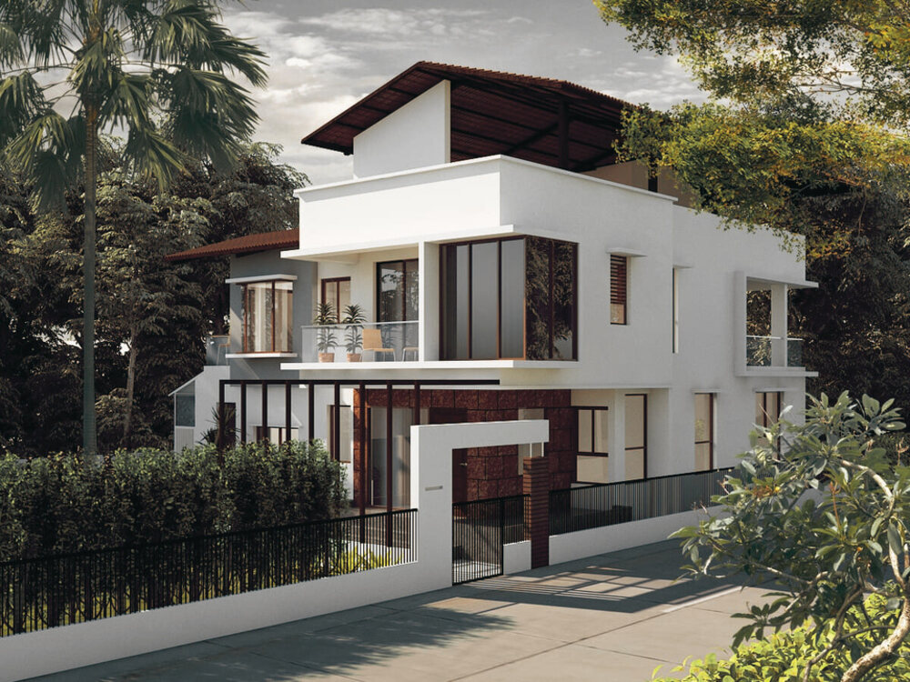
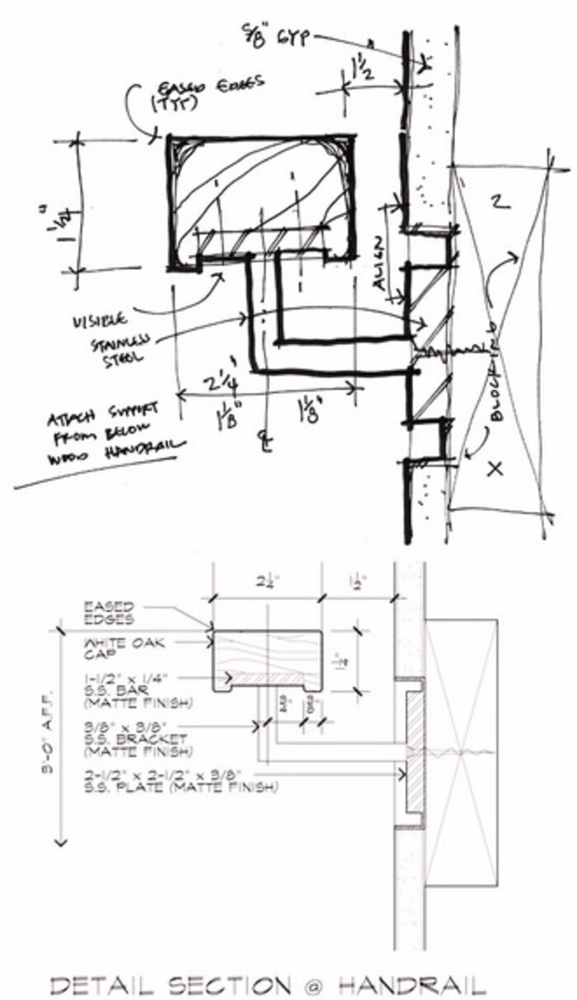
Hema is the driving force behind Tatva Studio — an architect who blends intuition with insight. A strategist and systems thinker, she operates at the intersection of design, ecology, and culture. Her expertise spans sustainable architecture, contextual design, and the revitalization of traditional systems through a contemporary lens. She builds with purpose — crafting spaces that are intuitive, resilient, and deeply rooted in place.
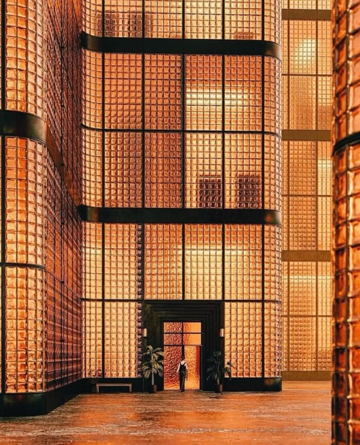
With over 25 years in architecture, Suritha brings a wealth of experience, clarity, and grounded wisdom to Tatva Studio. Her portfolio spans projects including Biocon Labs, Brigade Millennium, AstraZeneca, Reliance, Aster Cauvery Medical Center, and the National Institute of Design, Bangalore. At Tatva, she collaborates closely across all phases — from concept to execution — helping shape projects with strategic insight and deep contextual understanding.
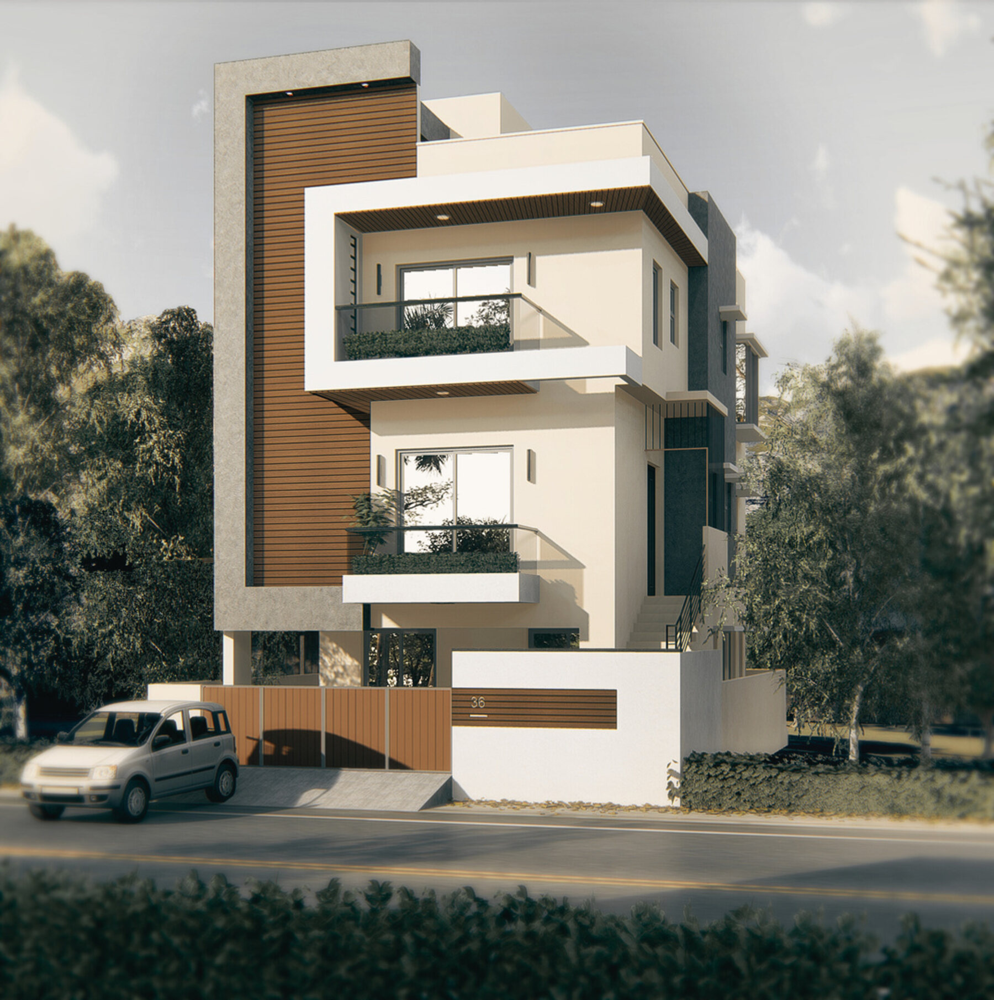
Thank you for taking the time to explore our journey, our values, and our work. Every project is an opportunity to build with intention, care, and clarity — we look forward to creating spaces that resonate deeply, with purpose and with people.